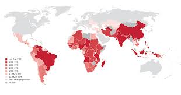

Global Data
Global Poverty Statistics (2025)

Source: World Bank / UN
Explore the latest data on poverty around the world. These statistics highlight the regions most affected, the number of people living in extreme poverty, and trends over time. Understanding these numbers helps us target solutions and support where it's needed most.
Trends & Insights
How Poverty Has Changed Over Time
While global poverty rates have declined over the past decades, progress has slowed in recent years due to economic shocks, conflicts, and climate change. Sub-Saharan Africa remains the most affected region, with nearly half of the world's extreme poor.
Extreme poverty is defined as living on less than $3.00 per day.
Most progress has been made in East Asia & Pacific, where poverty rates are now below 2%.
South Asia has seen significant improvement, but millions still live in poverty.
Latin America & Caribbean and Middle East & North Africa have relatively low rates, but inequalities persist.
Long-Term Trends
Decades of Progress and Recent Challenges
Since 1990, more than 1 billion people have been lifted out of extreme poverty worldwide.
Progress has slowed in recent years, with crises such as the COVID-19 pandemic, which pushed an additional 70 million people into extreme poverty in 2020.